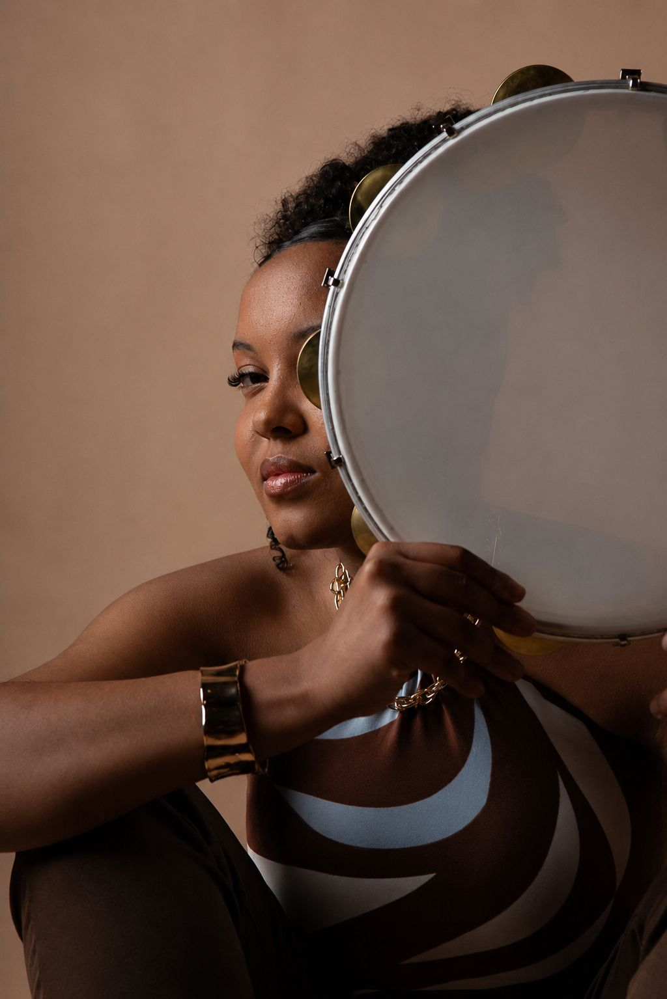
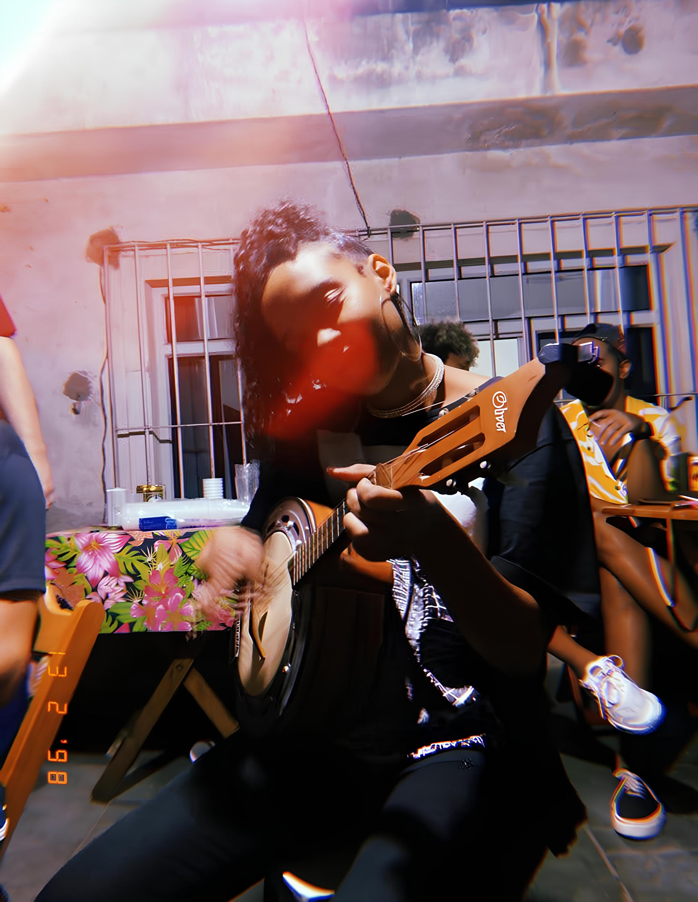
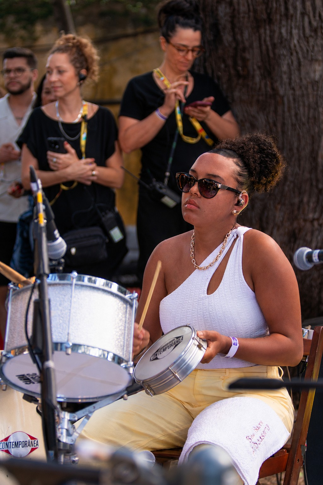

PANDEIRO
O Pandeiro é aquele instrumento que parece simples, mas na real é cheio de
possibilidades. Ele é basicamente uma moldura de madeira com uma pele esticada e várias
platinelas 'aqueles disquinhos de metal que fazem o som', um som que pode ser suave ou bem
marcado. É quase como ter uma bateria de bolso, só que com muito mais balanço. No Brasil, o
pandeiro virou símbolo de vários estilos.
No samba, ele dá aquele swing que faz todo mundo querer bater palma junto; no choro, aparece mais leve e cheio de detalhes; no forró, segura firme o ritmo; e no pagode, é praticamente indispensável. Cada gênero tem seu jeito de tocar, e isso deixa o instrumento ainda mais rico.
Ele foi o instrumento que mais tive dificuldade de aprender, pois é um instrumento que precisa de resistência para ser executado, e no samba, ele tem momentos específicos de fazer cada batidade. Hoje adoro tocar ele, agora temos mais intimidade.

CAVAQUINHO
O Cavaquinho é aquele instrumento pequeno que parece uma versão reduzida do violão, mas tem sua própria identidade: quatro cordas afinadas de um jeito diferente e um timbre que dá brilho às músicas. Ele é muito usado em samba, choro e pagode, sempre trazendo aquele toque animado que faz diferença na roda.
No samba, por exemplo, o cavaquinho ajuda a dar a base harmônica e rítmica, enquanto no choro ele aparece com frases rápidas. Apesar de pequeno, é um instrumento cheio de presença. Quem toca cavaquinho geralmente dá o tom da festa, porque o som dele é que conduz toda a roda, ele é como se fosse o “sorriso” da música brasileira.
E como diz Dona Ivone Lara "Samba sem cavaquinha, não é samba."

.png)
TAMBORIM
O Tamborim é aquele instrumento pequeno, mas que faz um barulho enorme. Ele tem raízes nas tradições africanas trazidas ao Brasil durante a escravidão, e com o tempo foi incorporado ao samba, ao choro e principalmente ao Carnaval.
Ele é um tamborzinho circular, de uns 6 a 8 polegadas, feito de metal, madeira ou acrílico, com uma pele bem esticada. O som é agudo e perfeito pra se destacar no meio da bateria de escola de samba. No samba-enredo, dezenas de tamborins tocam juntos, criando meio que uma paredde sonora que dá o ritmo da avenida.
O jeito de tocar é usando uma baqueta leve, de plástico ou madeira, e existem várias levadas famosas, como o “carreteiro”. Além disso, dá pra fazer variações com outros instrumentos que deixam o som ainda mais rico.
